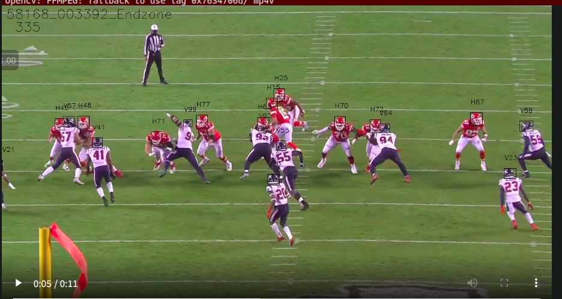

Draw boxes in a video
import os
import cv2
import subprocess
from IPython.display import Video, display
def video_with_helmets(
video_path: str,
baseline_boxes: pd.DataFrame,
verbose: bool=True
) -> str:
"""
Annotates a video with baseline model boxes and labels.
"""
VIDEO_CODEC = "MP4V"
HELMET_COLOR = (0, 0, 0) # black
video_name = os.path.basename(video_path)
if verbose:
print(f"Running for {video_name}")
baseline_boxes = baseline_boxes.copy()
vidcap = cv2.VideoCapture(video_path)
fps = vidcap.get(cv2.CAP_PROP_FPS)
width = int(vidcap.get(cv2.CAP_PROP_FRAME_WIDTH))
height = int(vidcap.get(cv2.CAP_PROP_FRAME_HEIGHT))
output_path = f"label_{video_name}"
tmp_output_path = f"tmp_{output_path}"
output_video = cv2.VideoWriter(
tmp_output_path, cv2.VideoWriter_fourcc(*VIDEO_CODEC), fps, (width, height)
)
frame = 0
while True:
worked, img = vidcap.read()
if not worked:
break
# We need to add 1 to the frame count to match the label frame index.
frame += 1
img_name = video_name.split(".mp")[0]
cv2.putText(
img=img,
text=img_name,
org=(10, 30), # stars from top-left
fontFace=cv2.FONT_HERSHEY_SIMPLEX,
fontScale=1,
color=HELMET_COLOR,
thickness=1,
)
cv2.putText(
img=img,
text=str(frame),
org=(30, 60),
fontFace=cv2.FONT_HERSHEY_SIMPLEX,
fontScale=1,
color=HELMET_COLOR,
thickness=1
)
boxes = baseline_boxes.query("video == @video_name and frame == @frame")
for box in boxes.itertuples(index=False):
cv2.rectangle(
img=img,
pt1=(box.left, box.top),
pt2=(box.left + box.width, box.top + box.height),
color=HELMET_COLOR,
thickness=1
)
cv2.putText(
img=img,
text=box.player_label,
org=(box.left + 1, max(0, box.top - 20)),
fontFace=cv2.FONT_HERSHEY_SIMPLEX,
fontScale=0.5,
color=HELMET_COLOR,
thickness=1
)
output_video.write(img)
output_video.release()
# NOTE: Not all browsers support the codec, we will re-load the file at tmp_output_path
# and convert to a codec that is more broadly readable using ffmpeg.
if os.path.exists(output_path):
os.remove(output_path)
subprocess.run(
[
"ffmpeg",
"-i",
tmp_output_path,
"-crf",
"18",
"-preset",
"veryfast",
"-hide_banner",
"-loglevel",
"error",
"-vcodec",
"libx264",
output_path,
]
)
os.remove(tmp_output_path)
return output_path
example_video = "../input/nfl-player-contact-detection/train/58168_003392_Endzone.mp4"
output_video = video_with_helmets(example_video, train_helmets)
frac = 0.65 # Scaling factor for display
display(
Video(data=output_video, embed=True, height=int(720 * frac), width=int(1280 * frac))
)

Create Animation video [matplotlib] on usa football field
import pandas as pd
import matplotlib.patches as patches
import matplotlib.pyplot as plt
import matplotlib.animation as animation
from IPython.display import HTML
def scatter_animation(game_play):
steps = df_final.query("game_play == @game_play").step
frames = sorted(steps[steps >= 0].unique())
min_step = min(frames)
example_tracks = df_final.query("game_play == @game_play and step == @min_step")
fig, ax = create_football_field(return_fig=True)
scat = ax.scatter(
example_tracks["x_position"],
example_tracks["y_position"],
color=example_tracks["team"].replace({'home': 'deepskyblue', 'away': 'limegreen'}),
s=65,
lw=2,
edgecolors=example_tracks["contact"].replace({0: 'black', 1:'red'}),
zorder=5,)
ax.set_title(f"Tracking data for {game_play}: at step {min_step}", fontsize=15)
def animate(i):
example_tracks = df_final.query("game_play == @game_play and step == @i")
scat.set_offsets(example_tracks[["x_position","y_position"]].to_numpy())
scat.set_color(example_tracks["team"].replace({'home': 'deepskyblue', 'away': 'limegreen'}))
scat.set_edgecolor(example_tracks["contact"].replace({0: 'black', 1:'red'}))
scat.set_linewidth(2)
ax.set_title(f"Tracking data for {game_play}: at step {i}", fontsize=15)
return animation.FuncAnimation(fig, animate, frames=frames,interval=75)
game_play = "58168_003392"
anim = scatter_animation(game_play)
HTML(anim.to_html5_video())